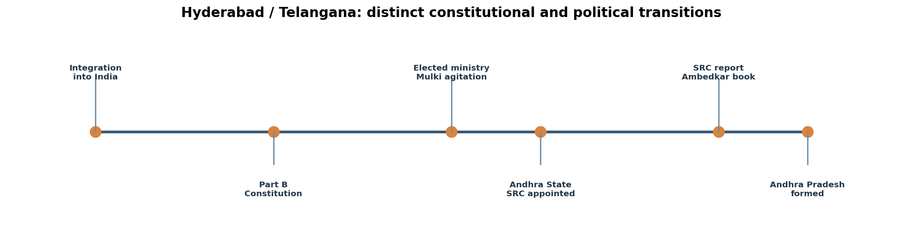
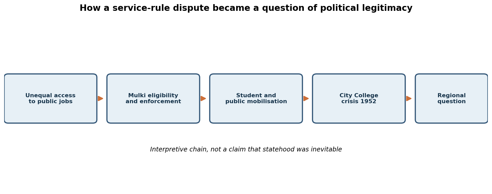
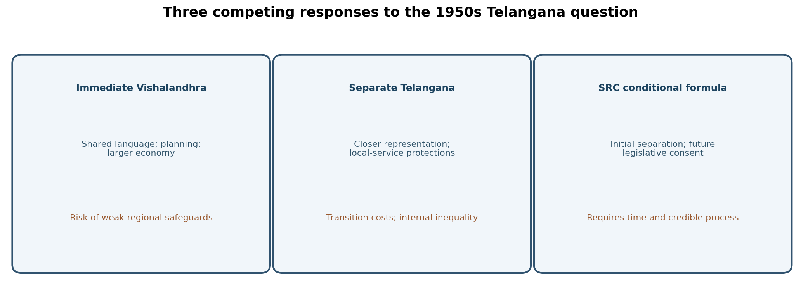

Paper VI · Unit I · Topic 2 — Hyderabad State in Independent India: Mulki Agitation, SRC and Smaller States
Status: Original study draft, not academically approved. All MCQs and mains models in this chapter are original practice, not verified official previous-year questions. Historical assertions are separated from later interpretation; source register records document type and limitations.
Syllabus wording (Notification 02/2024, Paper VI, Unit I, Item 2; official PDF had been verified in the preceding run but direct reopening was unavailable during this run; wording cross-checked with earlier commission syllabus reproductions):
Hyderabad State in Independent India- Formation of Popular Ministry under Burgula Ramakrishna Rao and 1952 Mulki-Agitation; Demand for Employment of Local people and City College Incident- Its importance. Justice Jagan Mohan Reddy Committee Report, 1953 – Initial debates and demand for Telangana State-Reasons for the Formation of States Reorganization Commission (SRC) under Fazal Ali in 1953-Main Provisions and Recommendations of SRC-Dr. B. R. Ambedkar’s views on SRC and smaller states.
Boundary: This topic begins with the elected Hyderabad ministry and examines the 1952 agitation and 1953–55 state-reorganisation debate. The Gentlemen's Agreement and the 1956 Andhra Pradesh merger belong primarily to Topic 3. They are mentioned only to explain the outcome of the SRC recommendations.
Syllabus coverage map
| Requirement | Sections |
|---|---|
| Hyderabad's constitutional status and elected popular ministry | 1–4 |
| Local employment and causes of the 1952 Mulki agitation | 5–7 |
| City College incident and importance | 8–9 |
| Justice Jagan Mohan Reddy inquiry and report | 10–11 |
| Early separate-Telangana arguments | 12–13 |
| SRC formation, membership and remit | 14 |
| SRC findings, safeguards, paragraph 386 | 15–17 |
| Ambedkar's critique, smaller states and minorities | 18–19 |
| Competing views, contemporary relevance, chronology | 20–23 |
| Quick revision, diagrams, original questions and models | 24–28 |
Chapter abstract
The transition from princely rule to elected government did not settle Hyderabad State's conflict over public employment. The 1952 Mulki agitation made the distinction between legal local eligibility and actual recruitment politically explosive; police firing around City College turned an administrative dispute into a crisis of legitimacy. An inquiry examined the violence but did not itself cure the employment grievance. Meanwhile the prospect of linguistic reorganisation raised a different question: whether Telugu-speaking Telangana should join Andhra immediately or remain a separate unit until consent and safeguards could be established. The States Reorganisation Commission in 1955 argued for a separate Hyderabad State for the time being, with a later conditional union. B. R. Ambedkar's 1955 critique of linguistic states supplies a distinct democratic argument about size, communal majorities and minority security. This chapter explains the links without treating 1948 integration, 1952 agitation, 1953 SRC appointment, 1955 report and 1956 merger as the same event.
1. Hyderabad State in the Republic: the constitutional starting point
After the Indian Union assumed control of Hyderabad in September 1948, the territory did not immediately become a Telugu-language state. It retained its multilingual configuration: Telangana in the Telugu-speaking districts, Marathwada in the Marathi-speaking districts and Kannada-speaking areas in the west. Its integration into India concerned sovereignty; the later decision to reorganise its internal boundaries concerned federal design. Confusing the two produces a distorted chronology. The 1950 Constitution treated Hyderabad as a Part B state, a category used for several former princely-state units. The Nizam, Mir Osman Ali Khan, functioned as Rajpramukh within the new constitutional arrangement, not as an independent sovereign ruler. The transition therefore combined political continuity in ceremonial office with a substantial change in constitutional authority.
Before representative government, the military administration under J. N. Chaudhuri and the subsequent civilian government headed by M. K. Vellodi had to address policing, revenue, public services, education and rehabilitation. A new government could not simply replace every official without disrupting essential functions. Recruitment from outside Hyderabad was defended as a practical way to fill shortages in a modernising administration. For local applicants, however, vacancies held by outsiders raised a question about the survival of the Mulki rules and about whether the new Indian government would honour the old state's protections. Administrative capacity and regional equity were thus interdependent rather than mutually exclusive problems.
The Part B classification also matters for state reorganisation. The SRC later examined whether different constitutional classes of states should persist and how administrative services and financial liabilities could be integrated. Hyderabad's internal linguistic plurality made a one-to-one translation from princely state to linguistic state impossible. An examiner may ask why a movement for Telangana was not simply a demand to reverse Hyderabad's 1948 integration: the answer is that the principal later demand concerned the territorial shape, employment rules and political safeguards of a state within India, not restoration of princely sovereignty.
2. The 1952 elections and Burgula Ramakrishna Rao's popular ministry
The first general elections under the Constitution transformed Hyderabad's executive accountability. Burgula Ramakrishna Rao, elected from Shadnagar, headed the first popularly elected ministry in March 1952 and served until the state's reorganisation in 1956. The ministry was not the first government of Hyderabad after 1948; the military and Vellodi administrations preceded it. The expression 'popular ministry' means an executive resting on representative politics rather than an interim administration nominated to manage a transition. This distinction is frequently tested because students may incorrectly name Vellodi as the first elected chief minister or assume that Burgula became chief minister in 1948.
The election brought different political forces into the legislature, including Congress and the Communist-associated People's Democratic Front. Rural struggles, agrarian relations and the state's regional divisions shaped electoral competition. One should not assume that a single electoral victory erased political differences among Telangana, Marathwada and Kannada-speaking districts. Burgula's cabinet had to govern the whole Hyderabad State; the later Telangana statehood debate concerned only a portion of that jurisdiction. He was therefore simultaneously a regional political figure, head of a composite state and participant in a national constitutional transition.
Representative government changed the channel through which grievances could be voiced. Students, teachers, employees and local associations could now petition ministers, organise delegations and demand legislative action. Yet elections also raised expectations: if a locally accountable ministry did not correct perceived violations of Mulki rules, citizens might regard democratic representation as ineffective. The agitation of 1952 should be understood partly as a test of whether the new ministry could convert electoral legitimacy into credible administrative remedies. A chief minister may support regional safeguards while also fearing disruption of services, legal uncertainty and violence. Explaining that tension is more useful than portraying Burgula either as an unqualified defender or an unqualified opponent of local claims.
3. Burgula ministry: agrarian and administrative priorities
Hyderabad's agrarian economy carried the legacy of jagirdari, tenancy insecurity, uneven landholding and coercive relationships in parts of the countryside. The post-integration state had begun land-tenure changes before 1952, and the elected ministry inherited their implementation. Burgula's period is associated with efforts to consolidate tenancy protection, rationalise administration, address the budget and widen education. Credit should be assigned with chronology: measures initiated by earlier administrations should not all be attributed to the chief minister personally. In an exam answer, write 'continued and implemented reforms in the post-1948 sequence' unless the particular enactment and date have been verified.
The ministry faced several distinct constraints. Revenue had to finance schools and infrastructure while responding to rural inequalities. A multilingual bureaucracy had to be staffed without abandoning local-service guarantees. Police were required to protect public order while respecting the right of citizens to protest. The centre expected stability in a sensitive former princely state, while voters expected tangible changes in everyday administration. These competing demands help explain why a formal elected government did not immediately resolve the Mulki question.
A district-level application makes the trade-off concrete. Suppose an education department finds qualified teachers in short supply and proposes interregional transfers. If local teachers already in service are moved out while vacancies are filled by people lacking the legally required local status, the grievance is not merely an abstract hostility to outsiders; it may involve a particular rule, job category, transfer order and certificate. Conversely, a claim that every outsider is unlawfully employed ignores possible exemptions, differing categories and lawful recruitment. The appropriate administrative response would disclose vacancies, verify service rules, audit certificates, create a transparent appeal mechanism and train local candidates for future vacancies. The 1952 government struggled with this kind of credibility problem.
4. Public employment as a distributive and symbolic question
Government service was valuable not only because it paid a salary. It offered social mobility, pension prospects, influence over public administration and the possibility of educating the next generation. In a region where educational access and language qualifications had been uneven, government recruitment became a measure of whether political change delivered fairness. Mulki eligibility rules were an institutional attempt to define local claims, but their effectiveness depended on the accuracy of certificates, recruitment procedures and enforcement. A formal right without implementation can intensify frustration because it creates a promise against which administrative conduct can be judged.
The word 'Mulki' must be used historically, not as a casual synonym for any person currently living in Telangana. Rules developed under Hyderabad's Nizam defined eligibility through specified conditions and documentation; later judicial decisions examined their legal continuity. A candidate should distinguish the existence of a rule from a proven breach in an individual case. Transfers, appointments, promotions and language qualifications could each create different disputes. Political slogans simplify these distinctions, whereas a civil-service analysis must restore them.
The issue also illustrates a larger constitutional dilemma. Public employment in a national union must respect legal equality, yet regionally unequal educational opportunities can mean that an apparently open competition advantages already privileged populations. Safeguards may respond to such inequalities, but they require legal authority, transparent criteria and proportional administration. The 1952 agitation emerged before the 1956 settlement and cannot be explained solely by later Andhra Pradesh politics. It reflected an immediate post-integration conflict about whose opportunities the Hyderabad State government was obligated to protect.
5. Why the 1952 Mulki agitation began
Accounts of the movement commonly identify Warangal–Hanamkonda as an early centre, particularly disputes over teacher transfers and appointments. Student groups interpreted administrative decisions as evidence that local service protections were being bypassed. The movement gathered momentum through school and college networks and spread to Hyderabad. Precise figures sometimes circulated for the number of transferred teachers, but those figures should not be repeated as audited facts without the original departmental orders. What can be established with greater confidence is the causal sequence: recruitment grievances; student mobilisation; appeals to political authorities; widening demonstrations; police confrontation; judicial inquiry.
The agitation was not an isolated campus disturbance. Teachers represented the link between schooling and future employment; their transfers directly affected families and educational continuity. Students faced the prospect of entering a labour market in which they feared local credentials would be disregarded. Parents, employees and public associations could therefore interpret the same transfer orders as part of a wider pattern. Slogans such as 'Non-Mulki go back' made the grievance visible but did not capture the full legal complexity of the rules. In writing about these slogans, report them as historical political language, not as a prescription for contemporary exclusion.
Why did the grievance escalate under an elected ministry? The new government had heightened public expectations, but administrative personnel and recruitment practices had not been transformed overnight. The gap between electoral promise and visible implementation created a credibility deficit. Police restrictions on rallies could then convert a service grievance into a confrontation over democratic rights. An analytical answer should not presume that all protesters were peaceful or that every police action was justified. Different incidents require separate evidence about crowd conduct, warnings, proportionality and alternatives to lethal force.
6. From Warangal to Hyderabad: mobilisation mechanisms
Student networks can move grievances rapidly because they connect schools, colleges, neighbourhoods and newspapers. In the 1952 case, the Warangal dispute became a rallying point for wider anxieties about public employment. Delegations sought assurances from the ministry, while local organisers called meetings and processions. The participation of students was significant: they were not yet holders of many coveted government posts, but they were directly invested in the future rules of access. This made the movement forward-looking as well as reactive.
Mobilisation also transformed the meaning of 'local'. In an administrative file, locality may be a test based on residence, service and certification. In a crowd, it can become a symbol of belonging and dignity. This transformation can strengthen collective bargaining, but it may also encourage sweeping hostility towards people who happen to speak another language. A balanced historian records both the legitimacy of complaints about violated rules and the danger of stereotyping entire migrant communities. The two judgments are compatible.
Political mediation was difficult. Elected representatives could negotiate demands, yet demonstrators might distrust assurances without an enforceable timetable. Police might seek to maintain circulation and public safety, but indiscriminate force could expand the protest rather than contain it. Media coverage of a lathi charge could connect otherwise local grievances. The Hyderabad phase should therefore be analysed as an interaction of grievance, mobilisation, policing and legitimacy rather than as a mechanical sequence of dates. This framework will also help when comparing the 1952 movement with the later 1969 agitation, while preserving their distinct contexts.
7. The demand for local employment: rights, records and remedies
The substantive demand concerned enforcement of local eligibility in government service. A sound answer should specify at least four administrative instruments: recruitment notifications that state eligibility; reliable Mulki certificates or residence documentation; scrutiny of appointments and transfers; and a grievance forum capable of ordering correction. Merely announcing that locals will receive priority cannot settle a dispute if the department does not publish who qualifies, which posts are covered or how alleged violations will be investigated. The distinction between a certificate being issued and the underlying facts being valid is especially important.
The demand had an economic rationale. Public jobs were relatively scarce and prestigious, and local educational infrastructure had developed under a different language and administrative system from parts of British India. The entry of officials trained elsewhere could be defended as a transitional staffing measure. However, transitional measures without sunset clauses or transparent exemptions could become permanent sources of resentment. A well-designed policy might combine immediate compliance checks with medium-term investment in teacher training, civil-service preparation and language bridging.
There is also a democratic rationale. Public authorities must be able to explain why a legal safeguard exists and how they implement it. If the government insists that no violations occurred, it should supply verifiable appointment data. If activists allege a particular number of unlawful appointments, they should distinguish audited cases from estimates. Both sides have evidentiary obligations. This distinction allows an examiner to reward historically sensitive argument rather than untested slogans. It also shows why the Mulki question survived changes of administration: the rules were concrete enough to generate expectations but politically contested enough to undermine trust.
8. City College, 3–4 September 1952: event and escalation
The confrontation associated with City College in Hyderabad became the movement's most remembered turning point. Student demonstrations and police restrictions preceded clashes around the college and adjoining urban areas. Police firing on 3 September and further violence on 4 September resulted in deaths and injuries. Accounts differ in how they count victims across locations and days; a careful manuscript should not collapse a single firing site into the total casualties of the entire agitation. The central fact is that a dispute over recruitment had escalated into lethal conflict between citizens and state forces.
City College's location and educational role mattered. The institution was a prominent urban college whose students could assemble, organise and communicate with other educational establishments. The incident was visible to Hyderabad's wider population, not restricted to one rural transfer dispute. Crowds, police personnel, political intermediaries and bystanders became involved. Public anger over the handling of the dead and injured deepened distrust. Accounts of police actions and crowd behaviour must be evaluated through the inquiry record and contemporaneous reporting rather than accepted uncritically from a single retrospective narrative.
The incident's political importance can be explained at three levels. First, it created a moral shock: lethal force against demonstrations made the issue urgent. Second, it prompted institutional responses, including a cabinet-level examination of Mulki safeguards and a judicial inquiry into the firing. Third, it helped connect an employment grievance to a wider regional claim about whether the new state was responsive to Telangana's population. It would be an overstatement to claim that the 1952 deaths alone made a separate Telangana inevitable. They were one formative event in a longer process of political articulation.
9. Policing, public order and the democratic legitimacy problem
Public protest can involve both protected expression and conduct that endangers others. A democratic administration must differentiate peaceful participants, violent individuals, police personnel and bystanders. The mere existence of a large crowd does not justify firing; nor does a movement's political cause excuse assault or destruction. The 1952 incidents raise precisely this difficulty. Police may argue that they faced stone-throwing and threats to public order. Critics may ask whether warnings, dispersal methods, negotiation and restraint were adequate. Both claims require location-specific evidence.
The government's legitimacy was tested twice: in its substantive response to local-employment demands and in its procedural response to public mobilisation. Even a lawful recruitment policy can lose credibility if citizens are denied a meaningful hearing; even a justified administrative grievance can be damaged when violence escalates. The judicial inquiry was therefore more than a technical investigation of ballistics or crowd movement. It became a public forum for evaluating state conduct and the grievances underlying the disturbance.
In mains writing, avoid retrospective certainty. The fact that a committee declined to hold police criminally responsible does not prove that every tactical decision was ideal. Conversely, an observation that a tragedy was avoidable is not identical to a legal finding of culpability. The appropriate conclusion is institutional: transparent grievance redressal, accountable policing and credible local-service enforcement are mutually reinforcing requirements of democratic government. That lesson explains the incident's continuing place in Telangana political memory without converting memory into a substitute for documentary evidence.
10. Justice Pingali Jagan Mohan Reddy inquiry: mandate and chronology
The Hyderabad government constituted a judicial inquiry under Justice Pingali Jagan Mohan Reddy to examine the September 1952 firing incidents. The commission took evidence from officials and other witnesses, including accounts of the events near City College and elsewhere. Many exam guides refer to the 'Jagan Mohan Reddy Committee Report, 1953', reflecting the wording of the syllabus or subsequent discussion. However, several historical accounts date submission of the inquiry report to 28 December 1952. This is a source-critical issue: students should not silently replace the syllabus label with an unsupported assertion about a 1953 submission. State the distinction explicitly and verify the original report before claiming a definitive filing date.
The inquiry's immediate mandate concerned circumstances leading to police firing, not an exhaustive judicial audit of every Mulki appointment in the state. This difference matters because the committee's findings cannot be treated as proof that every employment complaint was valid or invalid. The inquiry reportedly examined a substantial body of witness evidence, including police leadership and political figures. The quality of a historical conclusion depends on the surviving report and the reliability of its reproduction; a later coaching summary is not a substitute for a primary copy.
An examiner may expect the committee's observations on the avoidability of the incident, conduct of protesters and police, and the underlying sense of insecurity. Present these as attributed findings, not as the writer's independent legal judgment. Explain that the inquiry created an official record of the crisis but did not by itself eliminate recruitment grievances. The aftermath demonstrated that procedural accountability and substantive policy correction are separate tasks: a report can investigate violence while leaving the underlying employment rules contested.
11. What the inquiry did—and did not—resolve
Retrospective accounts generally describe the inquiry as recognising that better restraint and coordination might have averted the City College tragedy. Some summaries also report that it did not find police culpable for firing in the circumstances described. These propositions should be held together, not treated as contradictory: a decision may be judged understandable under immediate pressure while the preceding administrative choices are criticised as avoidable. Nevertheless, the original inquiry text should be consulted before assigning exact language or legal conclusions to the committee.
The inquiry did not legislate a new constitutional system. It could recommend improvements in administration and policing, but the executive and legislature remained responsible for implementing service rules. Nor did the report constitute the States Reorganisation Commission: Jagan Mohan Reddy's inquiry concerned the 1952 disturbances, whereas the Fazal Ali Commission, appointed in 1953, investigated the territorial reorganisation of India. Their names, dates, jurisdictions and outputs must be kept distinct.
The inquiry's longer-term significance lies in how an official examination of police violence preserved the political visibility of Mulki grievances. It gave later discussions a reference point: if local insecurity had contributed to unrest, state-building required more than rhetorical assurances. Yet it is misleading to say the report formally 'ordered' a separate Telangana. That question emerged through wider debates about representation, financial viability, linguistic identity and safeguards. A strong answer ends by linking administrative justice to federal design without confusing the mandate of the two commissions.
12. Early Telangana state demand: why linguistic sameness was insufficient
The demand for a separate Telangana region did not begin with the formation of Telangana State in 2014, nor was it identical to the 1952 Mulki protest. By the early 1950s, the possible dissolution of multilingual Hyderabad State and the creation of linguistic units made the status of Telangana an urgent question. Advocates of Vishalandhra argued that Telugu speakers should share a state, with common language facilitating administration, education and cultural integration. Advocates of a separate Telangana or delayed union pointed to Hyderabad's distinctive administrative experience, revenue arrangements, educational opportunities, service protections and the risk of domination by better organised interests.
A common language is a significant basis for solidarity, but it does not erase institutional differences. The Andhra State created in 1953 had separated from Madras; Telangana was part of a former princely state with different land, service and legal arrangements. Merging administrations meant reconciling pay scales, cadres, revenue systems, schools and public expenditure. Some Telangana representatives feared that pooled resources would not be allocated fairly and that their public-service safeguards would weaken. Others expected benefits from larger markets, shared irrigation projects and stronger political bargaining. Both positions contained practical arguments rather than merely sentiment.
The 1952 movement strengthened the political credibility of concerns about local employment, but it did not prove that every Telugu-speaking resident opposed union. There were competing views among political leaders, employees, students and communities. The historian's task is to explain why a substantial body of opinion demanded safeguards or a separate unit, not to invent unanimity. This is the key transition from Topic 2's employment grievance to the SRC's constitutional inquiry.
13. The Andhra State of 1953 and the Vishalandhra debate
The creation of Andhra State in October 1953 from Telugu-speaking districts of the former Madras State changed the political context. The question was no longer purely theoretical: a Telugu-language state now existed, and some leaders advocated its union with Telangana. Yet Andhra State and Telangana had followed different institutional histories. The former had been administered within the British Indian and then Madras provincial framework; the latter within Hyderabad's princely and post-integration framework. Administrative unification would require legal harmonisation, personnel integration and decisions about a capital, revenues and development priorities.
Supporters of a larger state saw linguistic unity and economic complementarities as advantages. Coastal agriculture, inland markets, Hyderabad's urban institutions and possible river projects could be planned within a broader territory. Opponents or conditional supporters stressed the uneven distribution of education, bureaucratic experience and political power. A region might benefit from joint investment while losing effective influence over its allocation. The SRC treated these as empirical and institutional questions rather than assuming that language settled everything.
For examination purposes, separate three dates: 1952 elected ministry and agitation; 1953 formation of Andhra State and appointment of the SRC; 1955 publication of the SRC report. The merger forming Andhra Pradesh took effect in November 1956 and is covered in the following syllabus topic. A timeline that moves directly from the 1952 City College firing to 1956 without the SRC's conditional recommendation misses the most important constitutional debate of this chapter.
14. The States Reorganisation Commission: appointment and method
The Government of India appointed the States Reorganisation Commission by a Home Ministry resolution dated 29 December 1953. Justice Fazal Ali chaired it; H. N. Kunzru and K. M. Panikkar were members. Its mandate was to examine the historical background, present conditions and relevant factors affecting reorganisation of the Union's states. It was not appointed solely to decide Telangana's future. Its nationwide work addressed language, national unity, administrative feasibility, financial viability, minority safeguards and the integration of public services. The commission issued invitations for memoranda and interviewed stakeholders across India.
The official report explains that the commission received a very large volume of submissions, many of them telegrams or resolutions rather than full research memoranda. This is an important methodological warning: the volume of submissions does not itself establish the representativeness of every claim. The commission had to weigh competing petitions, official statistics, administrative costs and minority interests. A candidate should understand why the exercise followed the creation of Andhra State and the growth of linguistic demands elsewhere, including the need to rationalise the unequal status of Part A, B and C units.
Its 1955 report is a primary source for what the commission recommended, not for every factual allegation made to it by political groups. The report's distinction between arguments received and conclusions adopted is essential. For example, a petition might claim a particular regional revenue surplus; the commission might discuss it while noting uncertainties in accounting. Treating every sentence in the report as an endorsed finding can misrepresent its reasoning. A careful answer identifies the commissioners, appointment date, criteria and final recommendations separately.
15. SRC on Hyderabad and Telangana: the case for caution
The SRC considered whether Telugu-speaking Telangana should be combined immediately with Andhra or remain a separate unit for a period. It acknowledged potential advantages of a larger Telugu state, including linguistic affinity and opportunities for coordinated development. Yet it also described apprehensions about the distribution of public employment, expenditure and political influence. Administrative integration was not costless: the recently created Andhra State was still managing its own transition from Madras, and Telangana's systems of land revenue and services differed from those of Andhra.
The commission examined possible safeguards, including guarantees of employment opportunity and special attention to regional development. It doubted whether simple political promises or arrangements modelled on earlier pacts would be adequate without credible oversight. The core issue was not whether the people of the two regions shared a language, but whether a merger at that moment could secure trust, administrative stability and a fair distribution of benefits. This is why the SRC's recommendation cannot be reduced to a slogan of permanent separation or automatic union.
For a nuanced answer, present both sides. The pro-unification case was real: cultural affinity and the prospect of common development could justify a larger state. The cautionary case was equally real: a region emerging from a distinct administrative system could be disadvantaged by rapid merger without enforceable safeguards. The SRC resolved the tension by recommending a separate Hyderabad State for the time being, with a future option of union conditional on legislative consent. The conditionality is the defining feature of its Telangana recommendation.
16. Paragraphs 386–388: the SRC's conditional formula
Paragraph 386 of the 1955 SRC report recommended that the Telangana area constitute a separate state, to be called Hyderabad State for the time being, with possible unification with Andhra after elections expected around 1961 if a two-thirds majority of the residuary Hyderabad legislature favoured it. Paragraph 387 explained the purpose of waiting: the two administrations could stabilise, review systems such as land revenue and build a genuine consensus. Paragraph 388 made clear that if Telangana public sentiment crystallised against unification, the region should continue separately. These are recommendations of a commission, not automatically operative constitutional provisions.
The phrase 'two-thirds majority' refers to the proposed future legislature's expression of support; it is not a claim that two-thirds of Telangana voters had already voted in a referendum. Similarly, 'around 1961' described the anticipated post-election period, not the date when a separate Telangana State actually came into being. In fact, the 1956 political decision differed from the commission's preferred sequence. A precise answer distinguishes recommendation, political decision and legal implementation. This distinction is one of the most valuable prelims and mains insights in the entire unit.
The SRC's proposal reveals a conception of federal reorganisation based on consent and institutional preparation. The commission did not say that shared language had no importance; it argued that language alone could not settle a contested merger. Nor did it prescribe that Telangana must remain separate forever. It offered a conditional route designed to allow both regional integration and regional autonomy to be considered over time. The commission's caution should be understood in the context of administrative uncertainty, employment grievances and the need for credible safeguards.
17. Beyond paragraph 386: viability, finance, minorities and services
The SRC's broader report discussed state viability, administrative cost, minority safeguards and integration of services. These themes explain why its Telangana chapter is not simply a linguistic map. Financial viability asks whether a proposed state can meet ordinary expenditure and invest in development without assuming every budget balance will remain unchanged after separation. Administrative viability asks whether institutions, courts, trained personnel and public-service structures can operate effectively. Minority protection asks whether a linguistic majority might marginalise residents who speak other languages or belong to vulnerable communities.
A critical reader should also note that regional revenue figures can be misleading if shared capital expenditure, debt, central transfers and accounting conventions are ignored. Hyderabad city generated administrative and commercial activity, but this did not mean that every district benefited equally or that all state assets could be divided mechanically. Likewise, a proposal to reserve a share of jobs requires decisions about seniority, existing cadres and future recruitment. The SRC considered the difficulty of designing safeguards that were credible in practice rather than symbolic on paper.
The report's relevance extends beyond Telangana. It offers a framework for evaluating any reorganisation demand: language and culture, geographic contiguity, financial capacity, administrative transition, minority rights and the consent of affected populations. The weight assigned to each factor may vary. A responsible examiner answer should not treat any one test as sufficient, because the commission itself approached state formation as a multi-factor problem.
18. Ambedkar's Thoughts on Linguistic States (1955)
B. R. Ambedkar's 1955 work Thoughts on Linguistic States was an independent constitutional and political intervention, not a minority report of the Fazal Ali Commission. He analysed linguistic reorganisation while warning against large states in which permanent communal majorities could dominate minorities. His distinction between a changeable political majority and a more rigid communal majority is central: elections alone may not protect a vulnerable group if the same social bloc can repeatedly monopolise power. In that setting, the size and composition of a state become questions of democratic justice, not merely administrative convenience.
Ambedkar did not simply reject all linguistic states. He considered language important for democratic communication and administration but argued that one language need not imply one single state. Multiple states could share a language, thereby limiting excessive concentration of political power. He advocated smaller units as one possible safeguard for minorities, alongside institutional protections. The argument should not be paraphrased as 'all small states are automatically fair'; small states can also reproduce caste domination or exclusion if their institutions remain unequal.
His work also proposed Hyderabad–Secunderabad–Bolarum as a possible second national capital arrangement, reflecting his concerns about the country's geographical balance and security. That idea is separate from the SRC's Telangana recommendation. Ambedkar's own proposal must not be presented as an SRC recommendation or as an enacted constitutional policy. In an answer on Telangana, use Ambedkar to broaden the normative framework: who benefits from a larger state, how do minorities secure voice, and can democratic institutions prevent permanent majoritarian rule?
19. Smaller states: democracy, safeguards and limitations
The case for smaller states is often made on grounds of administrative accessibility, responsive governance and better representation of territorially concentrated minorities. If decision-makers are closer to affected communities, citizens may find it easier to scrutinise resource allocation and hold officials accountable. However, proximity is not sufficient: elite capture, weak local institutions and unequal landownership can persist within small boundaries. Ambedkar's argument therefore requires safeguards against social domination, not only a redrawing of maps.
Large states may enjoy economies of scale, broader fiscal capacity and more integrated infrastructure planning. Smaller states may coordinate less easily on rivers, electricity grids or transport, and some may have limited revenue bases. Conversely, larger states may contain internal disparities and political centres that overlook peripheral districts. A sound evaluation compares administrative and democratic benefits with transition costs and intergovernmental cooperation. The optimal boundary cannot be inferred from population or language alone.
Applied to the Telangana debate, the question was whether merger would deliver shared development without weakening local-service protections and political voice. The SRC favoured delay and conditional consent; Ambedkar's writings raised the broader concern that large linguistic states could harden social majorities. Their arguments overlap in caution but differ in mandate and emphasis. SRC was a governmental commission making territorial recommendations; Ambedkar was a constitutional thinker presenting a normative critique. Treating them as identical erases a crucial distinction.
20. Competing positions: Vishalandhra, separate Telangana and conditional merger
Three positions are analytically distinguishable. Immediate Vishalandhra supporters valued linguistic integration, cultural solidarity and common development planning. Separate-Telangana supporters emphasised the distinct history of Hyderabad's Telugu districts, fear of losing jobs and control over expenditure, and the need for meaningful political autonomy. Conditional-merger advocates accepted potential long-term union but wanted enforceable safeguards, administrative preparation and consent first. Political actors could shift positions over time, and no single leader or organisation represented every resident.
A strong answer assesses each position rather than merely ranking them by later outcomes. Shared language can reduce communication costs and strengthen cultural exchange, but does not guarantee distributive fairness. Separate statehood can increase representation and accountability, but cannot automatically eliminate class, caste or regional inequalities within the new unit. Conditional merger can reduce risk and build trust, but may fail if safeguards are vague or if political incentives reward immediate settlement. The SRC's paragraph 386 was a concrete conditional-merger framework with an initial period of separate statehood.
The events of 1956 show why recommendations and outcomes must be distinguished. Political negotiations moved towards the creation of Andhra Pradesh earlier than the SRC's suggested later decision point. Whether that decision adequately protected Telangana became a recurring issue in subsequent decades. This chapter should stop at that transition: the Gentlemen's Agreement, Telangana Regional Committee and later safeguard violations receive detailed treatment in Topic 3, not retroactively inserted as if they had already existed in 1952.
21. Source criticism: how to avoid false certainty
Historical study requires a hierarchy of evidence. The original 1955 SRC report is the authoritative source for what the commission said; a 1955 Ambedkar publication is authoritative for his argument; a contemporary government order or inquiry report would be best for exact appointment and firing details. Later textbooks and news retrospectives can guide research but should not be promoted to original records. The syllabus itself is authoritative for what the examination covers, not for every disputed historical fact. A judicial judgment may establish later legal interpretation without reproducing all administrative practice in 1952.
Two issues require particular caution. First, the syllabus labels the Jagan Mohan Reddy report '1953', while commonly cited historical summaries place submission on 28 December 1952. Until the original inquiry report is inspected, note the discrepancy rather than suppressing it. Second, casualty counts vary because authors combine different firing locations and days. Use the general, well-supported description of deaths and injuries unless an original, clearly scoped official count is available. An answer that confidently repeats a disputed number is weaker than one that accurately describes the event and its consequences.
A third issue is retrospective teleology: knowing that Telangana became a state in 2014 does not mean every 1952 protester demanded that precise outcome or that the SRC's 1955 recommendation was an unambiguous instruction to create the 2014 state. Historical actors faced open alternatives. Read documents as interventions in their own time. That discipline allows a student to use later events as context without projecting them backward.
22. Telangana administrative applications: two counterfactual cases
Case A: teacher recruitment. A district office in 1952 receives evidence that local teachers were transferred and replacement appointments may not satisfy Mulki rules. An administrator should first identify the applicable service category and legal definition, then preserve personnel files, audit certificates, hear affected employees and publish a reasoned decision. A blanket dismissal of all outsiders without examination could itself be unlawful. Ignoring genuine violations would erode trust. The lesson is that public employment justice requires both a defensible rule and procedural fairness.
Case B: future state merger. Suppose a policy committee in 1955 must decide whether two Telugu-speaking regions should merge immediately. It should compare fiscal resources, irrigation and infrastructure commitments, service seniority, language requirements, legislative representation, and enforceability of safeguards. A promise that 'all regions will benefit' is inadequate without indicators, monitoring and remedies. The SRC's conditional recommendation was one way to address these risks through time and consent. The alternative immediate-union argument should be evaluated against the same measurable criteria, not dismissed as inherently illegitimate.
These cases are illustrative analytical exercises, not descriptions of particular files discovered in the archives. They show how historical reasoning can improve contemporary public-administration answers: define the legal question, gather disaggregated evidence, identify affected groups, compare options, explain trade-offs and specify accountability. The method also discourages anachronistic use of present-day district boundaries or laws in a 1952 setting.
23. Chronology and institutional comparison
| Date | Institution/event | What it actually changed |
|---|---|---|
| September 1948 | Hyderabad integrated into Indian Union | Sovereignty and administration, not Telangana–Andhra merger |
| 26 January 1950 | Constitution; Hyderabad Part B state | Constitutional position; Nizam as Rajpramukh |
| March 1952 | Burgula Ramakrishna Rao popular ministry | Elected executive accountable to legislature |
| July–September 1952 | Mulki mobilisation | Employment grievance becomes mass protest |
| 3–4 September 1952 | City College and related firing | Crisis of public order and political legitimacy |
| Late 1952 / syllabus 1953 label | Jagan Mohan Reddy inquiry | Examines police firing, not national state boundaries |
| October 1953 | Andhra State created | A Telugu-speaking state separate from Madras |
| 29 December 1953 | SRC appointed | National inquiry into state boundaries |
| 1955 | SRC report | Conditional, delayed Telangana–Andhra union proposal |
| 1955 | Ambedkar's Thoughts on Linguistic States | Independent critique of large linguistic states |
| November 1956 | Andhra Pradesh formed | Political/legal outcome distinct from SRC preference |
| Question | Jagan Mohan Reddy inquiry | Fazal Ali SRC |
|---|---|---|
| Trigger | September 1952 Hyderabad firing | Nationwide linguistic-state and federal restructuring debate |
| Subject | Circumstances of police action and agitation | Boundaries, viability, language, minorities, services |
| Scope | Hyderabad disturbances | Whole Indian Union |
| Key output | Inquiry findings on firing | 1955 state-reorganisation recommendations |
| Telangana link | Local insecurity and public-order legitimacy | Conditional separate-state/merger formula |
24. Standalone quick revision
The first elected Hyderabad chief minister was Burgula Ramakrishna Rao in 1952; M. K. Vellodi led the earlier civilian administration and was not the first popularly elected chief minister. Hyderabad was a Part B state after the Constitution commenced, with the Nizam as Rajpramukh. The 1952 Mulki agitation centred on implementation of local employment safeguards and spread from the Warangal–Hanamkonda area to Hyderabad. City College, 3 September 1952, marks a major police-firing episode; additional violence followed. The Jagan Mohan Reddy inquiry concerned the firing, not the design of new states. The syllabus calls it the 1953 report, while retrospective accounts cite a 28 December 1952 submission; flag this discrepancy in source-critical work.
The Andhra State was created in October 1953, before Andhra Pradesh existed. The States Reorganisation Commission was appointed 29 December 1953 under Fazal Ali, with H. N. Kunzru and K. M. Panikkar. Its 1955 report, paragraph 386, preferred Telangana as a separate Hyderabad State initially, with possible merger after elections around 1961 if two-thirds of its legislature supported it. Paragraph 388 allowed continued separation if Telangana sentiment opposed merger. These were recommendations, not the final political settlement. Ambedkar's 1955 *Thoughts on Linguistic States*** distinguished political and communal majorities and argued that smaller states could protect minorities. His ideas were not identical to the SRC report. **1956 merger details belong chiefly to the next topic.
Common errors to avoid: 1948 integration ≠ 1956 merger; Vellodi ≠ first elected CM; Jagan Mohan Reddy inquiry ≠ SRC; 'around 1961' ≠ actual merger date; SRC recommendation ≠ enacted constitutional rule; shared language ≠ proof of shared economic interests; small state ≠ automatic social justice. Never attribute a retrospective casualty total or an alleged employment violation to an original source that has not been checked.
25. Three original explanatory diagrams



The diagrams are original educational syntheses. Arrows express historical interpretation, not claims of deterministic inevitability. Their content is corroborated by the SRC report and identified source register.
26. Original explained MCQs — not official TGPSC PYQs
MCQ 1. What was Hyderabad's constitutional category on 26 January 1950?
A. Part A
B. Part B
C. Part C
D. Union Territory
Answer: B. Part B
Explanation: The Constitution placed former princely-state Hyderabad among Part B states; its later linguistic division was a separate issue.
MCQ 2. Who headed the first popularly elected Hyderabad ministry in 1952?
A. M. K. Vellodi
B. J. N. Chaudhuri
C. Burgula Ramakrishna Rao
D. Fazal Ali
Answer: C. Burgula Ramakrishna Rao
Explanation: Burgula led the elected ministry. Vellodi had headed the preceding civilian administration.
MCQ 3. Which distinction is historically accurate?
A. Hyderabad integrated in 1956 and merged in 1948
B. Hyderabad integrated into India in 1948; Andhra Pradesh was formed in 1956
C. Telangana became independent in 1948
D. Andhra State was created in 1956
Answer: B. Hyderabad integrated into India in 1948; Andhra Pradesh was formed in 1956
Explanation: Integration into the Union and reorganisation into Andhra Pradesh are different events separated by eight years.
MCQ 4. The 1952 Mulki agitation primarily concerned which demand?
A. Separate currency
B. Implementation of local public-employment safeguards
C. Restoration of princely sovereignty
D. Transfer of Hyderabad to Madras
Answer: B. Implementation of local public-employment safeguards
Explanation: Its immediate issue was access to public employment under local-service eligibility rules.
MCQ 5. Which geographical sequence best represents the early agitation?
A. Delhi to Chennai
B. Warangal–Hanamkonda to Hyderabad
C. Mumbai to Nagpur
D. Bengaluru to Mysuru
Answer: B. Warangal–Hanamkonda to Hyderabad
Explanation: School and teacher-related grievances in Warangal–Hanamkonda preceded the escalation in Hyderabad.
MCQ 6. City College is especially associated with which event?
A. Creation of Andhra State
B. September 1952 police firing during Mulki protests
C. Publication of SRC report
D. Appointment of the Constituent Assembly
Answer: B. September 1952 police firing during Mulki protests
Explanation: The City College incident on 3 September 1952 became a defining moment of the agitation.
MCQ 7. The Jagan Mohan Reddy inquiry primarily investigated
A. Nationwide state boundaries
B. The September 1952 Hyderabad police firing
C. River-water allocations in 2014
D. The Constitution's adoption
Answer: B. The September 1952 Hyderabad police firing
Explanation: Its immediate jurisdiction concerned the firing and disturbances, not national reorganisation.
MCQ 8. Why must the '1953' label for the Jagan Mohan Reddy report be used cautiously?
A. The committee was never appointed
B. Retrospective accounts report submission on 28 December 1952
C. The SRC was appointed in 1948
D. It was authored by Ambedkar
Answer: B. Retrospective accounts report submission on 28 December 1952
Explanation: The syllabus uses 1953, while many historical accounts cite a late-1952 submission; original archival confirmation remains necessary.
MCQ 9. Which body was appointed on 29 December 1953?
A. Finance Commission
B. States Reorganisation Commission
C. Jagan Mohan Reddy inquiry
D. Telangana Regional Committee
Answer: B. States Reorganisation Commission
Explanation: The Union Home Ministry appointed the SRC in December 1953.
MCQ 10. Who chaired the States Reorganisation Commission?
A. K. M. Panikkar
B. H. N. Kunzru
C. Justice Fazal Ali
D. Burgula Ramakrishna Rao
Answer: C. Justice Fazal Ali
Explanation: Fazal Ali chaired the SRC; Kunzru and Panikkar were members.
MCQ 11. Which pair correctly names the other SRC members?
A. Kunzru and Panikkar
B. Vellodi and Chaudhuri
C. Ambedkar and Nehru
D. Jagan Mohan Reddy and Burgula
Answer: A. Kunzru and Panikkar
Explanation: H. N. Kunzru and K. M. Panikkar served alongside chairman Fazal Ali.
MCQ 12. Which event occurred in October 1953?
A. Andhra Pradesh merger
B. Creation of Andhra State
C. Hyderabad integration
D. SRC final report
Answer: B. Creation of Andhra State
Explanation: Andhra State was created from Madras State in 1953; Andhra Pradesh followed in 1956.
MCQ 13. The SRC's main purpose was
A. Only to settle Hyderabad police violence
B. To consider India's state reorganisation using multiple criteria
C. To conduct the 1952 Hyderabad elections
D. To draft the 1919 Mulki Farman
Answer: B. To consider India's state reorganisation using multiple criteria
Explanation: Its nationwide remit included language, administration, finance, minority safeguards and other factors.
MCQ 14. Which SRC paragraph contains the conditional Telangana merger formula?
A. Article 356
B. Paragraph 386
C. Paragraph 1 of the Constitution
D. Paragraph 500
Answer: B. Paragraph 386
Explanation: Paragraph 386 recommended a separate Hyderabad State initially and a later conditional union.
MCQ 15. What did SRC paragraph 386 propose for Telangana initially?
A. Immediate unconditional union with Andhra
B. Separate Hyderabad State for the time being
C. Merger with Madras
D. Central administration forever
Answer: B. Separate Hyderabad State for the time being
Explanation: The SRC preferred a separate Telangana-area Hyderabad State during an initial period.
MCQ 16. The proposed later union required
A. A majority of the Andhra cabinet alone
B. Two-thirds support in the residuary Hyderabad legislature
C. A referendum in all Indian states
D. Approval by the Nizam alone
Answer: B. Two-thirds support in the residuary Hyderabad legislature
Explanation: The SRC specified a two-thirds legislative majority after elections expected around 1961.
MCQ 17. In the SRC recommendation, 'around 1961' referred to
A. Actual creation of Telangana in 2014
B. Anticipated post-election consideration of union
C. Date of 1952 firing
D. Date of Hyderabad integration
Answer: B. Anticipated post-election consideration of union
Explanation: It was a future conditional decision point, not an event that necessarily occurred.
MCQ 18. SRC paragraph 388 contemplated what if Telangana sentiment opposed union?
A. Immediate abolition of Telangana
B. Continued existence as a separate unit
C. Transfer to Bombay
D. Suspension of elections
Answer: B. Continued existence as a separate unit
Explanation: The report allowed Telangana to remain separate if sentiment crystallised against unification.
MCQ 19. Which statement best distinguishes an SRC recommendation from law?
A. Every SRC recommendation was self-executing
B. A commission proposal required political and legal action to take effect
C. The SRC was the Supreme Court
D. The report itself amended the Constitution
Answer: B. A commission proposal required political and legal action to take effect
Explanation: A commission advises; implementation requires governmental and legislative decisions.
MCQ 20. Why did the SRC express caution about immediate merger?
A. The regions had no linguistic links
B. Administrative transition and enforceability of safeguards were unresolved
C. Andhra State was already 100 years old
D. Telangana had no cities
Answer: B. Administrative transition and enforceability of safeguards were unresolved
Explanation: The report weighed genuine common interests against differences in systems, employment and institutional trust.
MCQ 21. Which was NOT a central SRC criterion?
A. Financial viability
B. Administrative feasibility
C. Minority safeguards
D. Astrological compatibility
Answer: D. Astrological compatibility
Explanation: The commission examined evidence-based constitutional, economic and administrative factors.
MCQ 22. Who wrote Thoughts on Linguistic States (1955)?
A. B. R. Ambedkar
B. Fazal Ali
C. K. M. Panikkar
D. Burgula Ramakrishna Rao
Answer: A. B. R. Ambedkar
Explanation: Ambedkar's book was an independent intervention, not a section of the SRC report.
MCQ 23. Ambedkar's distinction between political and communal majorities emphasised that
A. Both are always equally changeable
B. A communal majority can be socially entrenched
C. Political majorities cannot change
D. Minorities need no safeguards
Answer: B. A communal majority can be socially entrenched
Explanation: His warning concerned the permanence of social domination despite periodic elections.
MCQ 24. Which proposition aligns with Ambedkar's linguistic-state analysis?
A. One language must always equal one state
B. Multiple states may share one language
C. All states should have the same area
D. Language must never matter
Answer: B. Multiple states may share one language
Explanation: He rejected the necessity of a single state for all speakers of one language.
MCQ 25. Ambedkar's proposed second-capital discussion included
A. Hyderabad–Secunderabad–Bolarum
B. Kochi–Thrissur
C. Jaipur–Ajmer
D. Guwahati–Shillong
Answer: A. Hyderabad–Secunderabad–Bolarum
Explanation: His book considered the Hyderabad urban region as a possible second national capital, a separate idea from the SRC's Telangana recommendation.
MCQ 26. Which option correctly identifies a risk of smaller states?
A. They always eliminate caste inequality
B. They may reproduce elite capture and need coordination mechanisms
C. They have no legislative institutions
D. They cannot levy any taxes
Answer: B. They may reproduce elite capture and need coordination mechanisms
Explanation: Smaller scale may improve access but does not automatically correct social or fiscal inequalities.
MCQ 27. What is a responsible way to treat differing casualty totals for 1952?
A. Choose the largest figure without checking
B. Specify locations and dates and seek original records
C. Say no one died
D. Treat all later summaries as identical
Answer: B. Specify locations and dates and seek original records
Explanation: Different accounts aggregate different incidents; scoped primary evidence is needed for precise totals.
MCQ 28. A legal Mulki certificate should be assessed by
A. Language alone
B. The applicable rules and verified eligibility evidence
C. A protest slogan
D. Whether the applicant knows a politician
Answer: B. The applicable rules and verified eligibility evidence
Explanation: The historical eligibility category required legal conditions and documentation, not broad cultural assumptions.
MCQ 29. Which event best illustrates the distinction between regional grievance and federal design?
A. The Mulki agitation led to discussion of safeguards, while the SRC addressed state boundaries
B. Both inquiries were the same committee
C. A service certificate directly amended state borders
D. The 1952 firing created Andhra Pradesh
Answer: A. The Mulki agitation led to discussion of safeguards, while the SRC addressed state boundaries
Explanation: The local employment conflict informed later debate, but the national reorganisation process had its own mandate.
MCQ 30. A balanced conclusion on the 1952–55 period should emphasise
A. That all Telugu speakers agreed on one settlement
B. The interaction of local-service justice, representative government, and conditional federal reorganisation
C. That the 1955 report was implemented exactly in 1956
D. That the Nizam chaired the SRC
Answer: B. The interaction of local-service justice, representative government, and conditional federal reorganisation
Explanation: The period is best understood through competing legitimate concerns, administrative transition and the gap between recommendation and outcome.
27. Mains answer blueprints and six complete structured models
Mains model 1: Explain how Burgula Ramakrishna Rao's popular ministry changed Hyderabad politics while leaving the Mulki grievance unresolved.
Blueprint: Introduce the institutional context; organise the body by causes, actors and documented decisions; distinguish interpretation from source evidence; close with a balanced evaluative conclusion.
Background. Hyderabad's 1948 integration changed sovereignty, but its transition to elected government was gradual. Under the Constitution it became a Part B state, and an interim civilian administration preceded the 1952 elections.
Popular ministry. Burgula Ramakrishna Rao became the first popularly elected chief minister in March 1952. Legislative accountability replaced reliance on a nominated transitional executive. The ministry inherited agrarian reform, education, public-service staffing and the difficult integration of institutions developed under princely rule. Electoral politics gave citizens a clearer channel for petitioning ministers and demanding remedies.
Why employment remained contentious. Local applicants expected the old Mulki safeguards to govern appointments. Administrators also faced shortages of trained personnel and defended some outside recruitment as necessary for continuity. Without transparent vacancy records, certificate scrutiny and appeal mechanisms, these explanations failed to build confidence. Teacher-transfer disputes in the Warangal region became symbols of a wider fear that electoral change had not produced equitable access to jobs.
Assessment. Burgula's ministry should neither be credited with every post-1948 reform nor portrayed as solely responsible for inherited problems. Its central difficulty was translating representative legitimacy into enforceable administrative fairness. The 1952 agitation exposed that gap and helped transform a service grievance into a broader question about Telangana's voice within the state.
Conclusion. Democratic institutions were necessary, but the movement showed that elections alone could not resolve regional inequalities without credible implementation of rules.
Mains model 2: Analyse the causes, course and significance of the 1952 Mulki agitation and City College incident.
Blueprint: Introduce the institutional context; organise the body by causes, actors and documented decisions; distinguish interpretation from source evidence; close with a balanced evaluative conclusion.
Context. The Mulki question concerned whether local eligibility rules for Hyderabad public employment were being honoured after integration into India. Government jobs carried both economic security and social prestige, making recruitment disputes politically sensitive.
Causes. Administrative transfers and appointments, especially grievances involving teachers in Warangal–Hanamkonda, were interpreted as evidence that local safeguards were being weakened. Differences in education and service systems increased anxiety about competition with better-trained outsiders. The arrival of an elected ministry in 1952 raised expectations of rapid correction.
Course. Student groups organised demonstrations and the agitation spread towards Hyderabad. Police restrictions and confrontations escalated tensions. On 3 September 1952, firing associated with City College caused deaths and injuries; further violence followed on 4 September. Precise casualty totals must be tied to individual locations and records rather than repeated uncritically.
Importance. The incident converted an employment controversy into a crisis of public trust. It prompted official inquiry and intensified discussion of accountable policing and enforcement of Mulki rules. Students became visible political actors, and local job protection acquired a wider meaning as a demand for regional dignity.
Conclusion. The agitation did not automatically establish a unanimous demand for separate statehood, but it made Telangana's administrative grievances harder to ignore. Its enduring lesson is that representative government must combine fair service rules with credible grievance redressal and proportionate public-order management.
Mains model 3: Evaluate the Jagan Mohan Reddy inquiry and explain its limits as a source for Telangana history.
Blueprint: Introduce the institutional context; organise the body by causes, actors and documented decisions; distinguish interpretation from source evidence; close with a balanced evaluative conclusion.
Introduction. The Hyderabad government appointed a judicial inquiry under Justice Pingali Jagan Mohan Reddy following the September 1952 police firing associated with the Mulki agitation. The inquiry's mandate concerned the circumstances of violence, not nationwide state reorganisation.
Evidence and findings. Accounts describe examination of official and civilian witnesses, including the context of City College and other locations. Retrospective summaries report observations that greater restraint and coordination could have prevented the tragedy. Some also state that the committee did not find the police culpable in the immediate circumstances. These propositions should be attributed carefully until the original report is independently inspected.
Source caution. The examination syllabus calls it the '1953' report, while several historical summaries cite submission on 28 December 1952. This discrepancy should be noted rather than concealed. Casualty totals likewise vary because accounts combine different firing incidents. The inquiry cannot be used to prove every alleged illegal appointment, nor can it be presented as having ordered a separate Telangana.
Historical significance. The proceedings gave official visibility to public insecurity and the government's policing response. They illustrated how failure to address service grievances could undermine the legitimacy of a new elected ministry.
Conclusion. The inquiry is an important institutional response to the 1952 crisis, but its scope was limited. Historians must distinguish its documented findings from later political interpretations and from the separate Fazal Ali Commission's constitutional recommendations.
Mains model 4: Discuss the rationale for appointing the SRC and its conditional recommendation concerning Telangana.
Blueprint: Introduce the institutional context; organise the body by causes, actors and documented decisions; distinguish interpretation from source evidence; close with a balanced evaluative conclusion.
Background. After independence, India's state boundaries reflected British provincial administration and the integration of princely states. Linguistic demands, the creation of Andhra State in 1953 and disparities between constitutional categories made a comprehensive review necessary.
Commission. The Union government appointed the States Reorganisation Commission on 29 December 1953 under Justice Fazal Ali, with H. N. Kunzru and K. M. Panikkar. It considered language, national unity, financial viability, administrative capacity, public services and minority safeguards. The 1955 report was advisory, not self-executing law.
Telangana problem. The commission acknowledged linguistic and developmental advantages of union with Andhra. However, Telangana had different service and revenue systems, and there were concerns about employment, expenditure and political voice. Andhra State itself was still adjusting to separation from Madras. The commission doubted that ordinary political assurances alone would guarantee protection.
Recommendation. Paragraph 386 favoured Telangana remaining a separate Hyderabad State initially, with possible union after elections expected around 1961 if two-thirds of its legislature supported it. Paragraph 388 contemplated continued separation if sentiment opposed merger. This was conditional, not a rejection of all future unity.
Conclusion. The SRC treated language as important but insufficient. Its formula sought time for administrative preparation and consent. The eventual 1956 political settlement differed from that preferred sequence, illustrating the distinction between commission recommendation and governmental decision.
Mains model 5: Explain Ambedkar's arguments on linguistic and smaller states and assess their relevance to Telangana.
Blueprint: Introduce the institutional context; organise the body by causes, actors and documented decisions; distinguish interpretation from source evidence; close with a balanced evaluative conclusion.
Introduction. In Thoughts on Linguistic States (1955), B. R. Ambedkar analysed state reorganisation from the standpoint of democracy and minority protection. His book was an independent critique, not a minority report of the Fazal Ali Commission.
Language and statehood. Ambedkar accepted that language could assist communication and administration, but rejected the necessity of one state for every language. Several states could share the same language. A linguistic boundary by itself could not guarantee equality or good government.
Majority problem. He distinguished a changeable political majority from an entrenched communal majority. Large states could magnify the power of dominant social groups and reduce minorities' effective influence. Smaller states could be one safeguard, provided representation and constitutional institutions also protected vulnerable people.
Application. The Telangana debate likewise involved fears that a larger Telugu state might distribute jobs, revenue and political influence unevenly. Ambedkar's reasoning encourages scrutiny of power within a linguistic community, not merely solidarity between speakers. Yet a smaller state may still reproduce caste hierarchy, elite capture or fiscal weakness; it is not automatically just.
Conclusion. Ambedkar's contribution is a normative test: state boundaries should support accountable government and minority security. His proposed Hyderabad-area second capital was a distinct national idea. The SRC's conditional Telangana recommendation and Ambedkar's argument overlap in caution but must not be conflated.
Mains model 6: Compare the arguments for immediate Vishalandhra, separate Telangana and a conditional merger in the mid-1950s.
Blueprint: Introduce the institutional context; organise the body by causes, actors and documented decisions; distinguish interpretation from source evidence; close with a balanced evaluative conclusion.
Setting. The creation of Andhra State in 1953 made the future of Telugu-speaking Telangana an immediate question. The two regions shared linguistic ties but had different administrative histories, public-service systems and developmental conditions.
Immediate union. Supporters of Vishalandhra argued that a common language could strengthen political solidarity, educational exchange and planning across a larger economy. Coordinated irrigation, infrastructure and markets offered potential gains. Their case should not be dismissed as lacking substance.
Separate Telangana. Advocates stressed local employment guarantees, political representation, revenue allocation and the risk that more organised groups might dominate the new state. The 1952 Mulki agitation had made administrative mistrust visible. Separate statehood could provide closer accountability, though it would not automatically remove internal social inequalities.
Conditional approach. The SRC proposed a separate Hyderabad State for the time being, allowing the administrations to stabilise and requiring a two-thirds legislative expression after elections expected around 1961 for a later union. This treated shared language as important while insisting on consent and credible safeguards.
Assessment. Each approach had costs. Large-scale union could create coordination benefits but also regional imbalance. Separation could strengthen representation but require new intergovernmental arrangements. Delay could build trust yet leave political uncertainty.
Conclusion. The best historical explanation recognises competing visions rather than inventing unanimity. The 1956 outcome was a political settlement distinct from the SRC's preferred timetable, and its safeguards must be studied separately in the next topic.
28. Dated source register, 2026 updates and verification audit
Sources below were inspected or cross-checked on 25 October 2026. The original 2024 TGPSC syllabus PDF had been authenticated in the preceding run but returned HTTP 502 on this run; exact item wording was corroborated by independent syllabus reproductions and is flagged for reinspection. The original Jagan Mohan Reddy inquiry report was not independently obtained. No casualty number or unverified quotation from that report is presented as established primary evidence.
| ID | Issuer / source | Date | Use and limitation |
|---|---|---|---|
| S01 | TGPSC Notification 02/2024, Group I syllabus | 19 Feb 2024 | Syllabus authority; direct re-open 502 this run, authenticated earlier and corroborated; does not authenticate every historical claim. |
| S02 | Union Ministry of Home Affairs: States Reorganisation Commission report | 1955; portal checked 25 Oct 2026 | Primary for SRC appointment, method, Telangana reasoning and paras 386–388; original scanned report accessible. |
| S03 | Dr B R Ambedkar Writings and Speeches, Vol I | Thoughts on Linguistic States, first published 1955 | Primary for Ambedkar's majority/minority and smaller-state arguments; search-indexed PDF accessible, direct PDF download timed out. |
| S04 | Government of India Ministry of Home Affairs: Srikrishna Committee report | 2010/2011 | Official retrospective for Mulki legal history and Telangana context; not an eyewitness record of 1952. |
| S05 | Supreme Court of India: Director of Industries and Commerce v V Venkata Reddy | 3 Oct 1972 | Judicial primary account of Hyderabad service rules, 1950/1951 circulars and later validity; retrospective for 1952. |
| S06 | Government of Telangana, State Archives and Research Institute | institutional site checked 25 Oct 2026 | Custodian of Hyderabad administrative records; archive holdings are not equivalent to having inspected the 1952 inquiry file. |
| S07 | Parliament Digital Library: States Reorganisation Commission question | 4 Mar 1955 | Primary parliamentary record showing contemporaneous national discussion; not the commission's final report. |
| S08 | Nehru Archive: Congress Working Committee resolution on SRC | 9 Nov 1955 | Transcription of a dated political response; distinguish party preference from SRC recommendation. |
| S09 | Government of Telangana: Praja Palana Dinotsavam release | 17 Sep 2026 | Primary source for contemporary state commemoration of 1948; not evidence of the motives of all actors in 1952. |
| S10 | Telangana Open School: Intermediate Political Science | undated education edition; checked 25 Oct 2026 | Government textbook synthesis; useful corroboration, not a primary inquiry report. |
| S11 | Contemporary newspaper retrospective: 1952 Mulki agitation | 2022 | Secondary narrative for inquiry and firing chronology; contested details explicitly not elevated to primary evidence. |
Current affairs with dated relevance
17 September 2026: the Telangana government marked Praja Palana Dinotsavam and publicly linked the 1948 transition to democratic participation, rights and social justice [S09]. The statement demonstrates how the government frames the anniversary in 2026; it does not retrospectively prove the intention of the 1952 protesters or the SRC commissioners. A student may use it as a carefully labelled contemporary memory-policy example, not as a substitute for the SRC report.
24–25 October 2026 source availability: the Ministry of Home Affairs continues to host the full 1955 SRC report [S02], which makes direct comparison between the commission's recommendation and later political outcomes possible. The report's 1955 contents are historical; the 2026 access date is a verification date, not a new policy development.
Critical unresolved checks: obtain and examine the original Jagan Mohan Reddy inquiry report and its filing date; corroborate 1952 casualty counts against contemporaneous official records by location; verify any exact teacher-transfer total from personnel orders; inspect a directly accessible copy of the 2024 notification again; commission independent historical and legal review of all model answers and distractors. Academic approval remains zero.